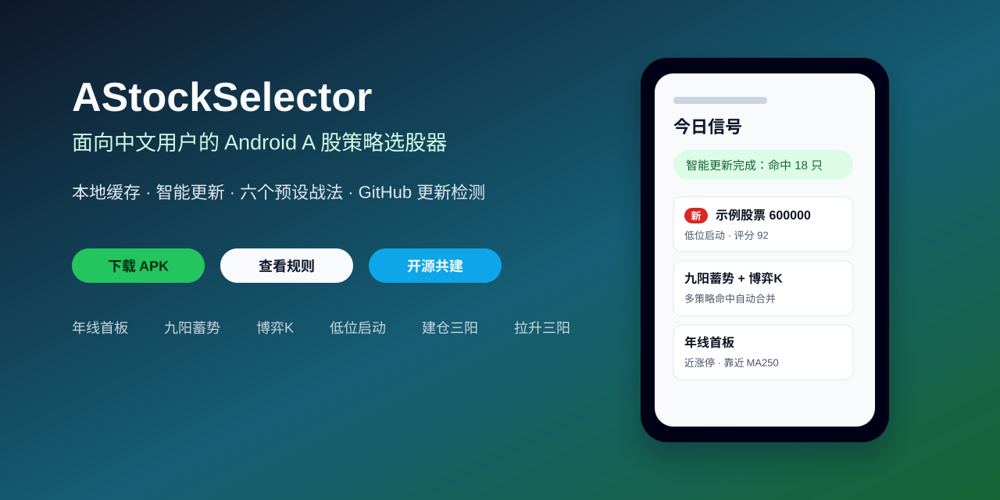
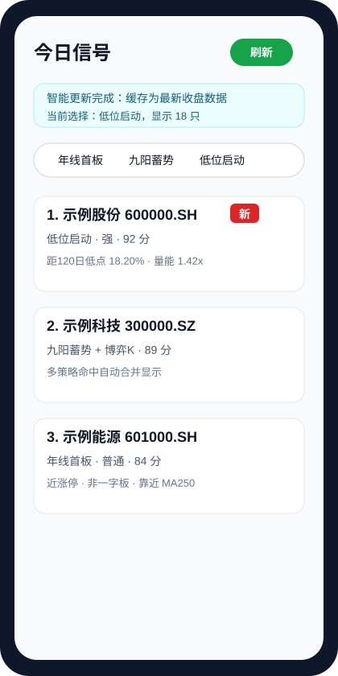
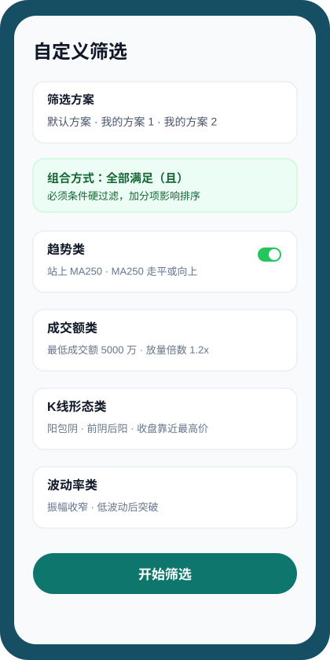
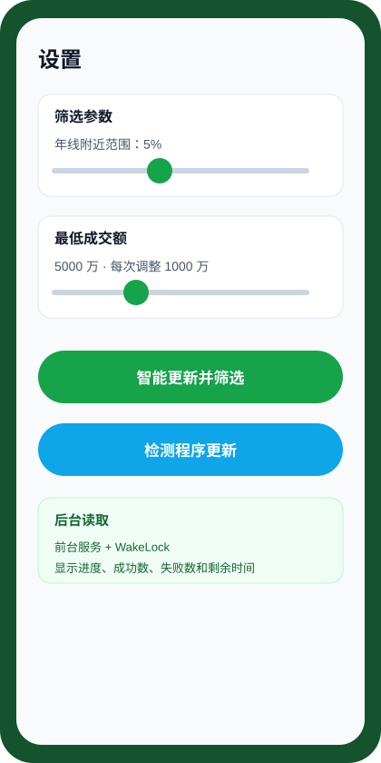
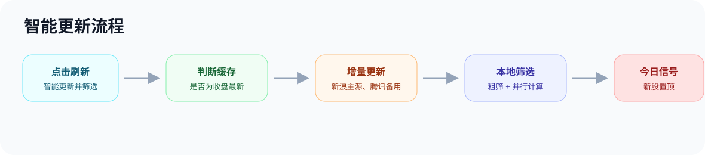

开源 Android · A 股日线策略筛选
面向中文用户的手机端 A 股策略选股器，支持本地缓存、智能更新、预设战法、自定义筛选和 GitHub 更新检测。

在 Android 端联网读取 A 股列表和日 K 数据，合并到本地 SQLite 缓存，并自动清理过早数据。
支持年线首板、九阳蓄势、博弈K、低位启动等预设战法，也支持自定义筛选条件。
今日信号会持久保留；新入选股票置顶并显示“新”标识，方便复盘变化。



